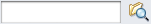
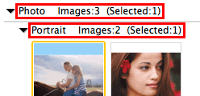

Select View & Use in the Navigation Mode screen and click My Box (Scanned/Imported Images), Specify Folder or Recently Saved Images to open the View & Use window.
Open this window to display or use scanned images or images saved on a computer.
(3) Toolbar
(4) Thumbnail Window
 Important
ImportantFor PDF files, only those created with MP Navigator EX are displayed. You cannot display PDF files created with other applications. PDF files edited in other applications cannot be displayed as well.
(Scan/Import)
Click this when you want to scan photos, documents, magazines, and other printed materials. The Scan/Import window opens.
My Box (Scanned/Imported Images)
Displays folders of images (grouped by year, month/year and month/date/year) in My Box in tree view. Select a folder to display its contents in the Thumbnail window to the right.
Image date is the scanned, captured, or updated date.
Specify Folder
Displays all disks and folders in tree view. Select a folder to display images in the Thumbnail window to the right.
Selecting a folder and clicking it highlights the folder name, allowing you to rename it.
Recently Saved Images
"Scanned/Imported Images" and images that have been "Attached to E-mail" or "Sent to Application" recently are displayed in tree view by date. For "Scanned/Imported Images", "From Scanner" and "From Memory Card" are displayed separately. Select a Month/Date/Year folder to display images by date in the Thumbnail window to the right.
Image date is the scanned or sent date.
Click Clear History to clear all data (date folders and images) displayed in Recently Saved Images.
 Note
NoteThe actual image files are not deleted.
Search
The advanced search options opens.
Jump to Main Menu
Jumps to the Main Menu.
ImportantJump to Main Menu is not displayed when the window is opened directly from Solution Menu EX.
Image Handling Buttons
Click (Up arrow) to display the task menu.
Specify what to do with the selected images. See the corresponding sections below for details on each button.
NoteThe buttons in Image Handling Buttons are displayed when the corresponding applications are installed.
Preferences
The Preferences dialog opens. In the Preferences dialog, you can make advanced settings to MP Navigator EX functions.
 (Guide)
(Guide)
Opens this guide.
Edit Tools
 (Select All)
(Select All)
Selects all images in the Thumbnail window.
 (Cancel All)
(Cancel All)
Cancels all image selections in the Thumbnail window.
 (Image Correction/Enhancement)
(Image Correction/Enhancement)
Allows you to correct the target image (outlined in orange). Click this button to open the Correct/Enhance Images window in which you can correct/enhance images and also adjust the brightness, contrast, etc.
ImportantImage correction/enhancement cannot be applied to PDF files or black and white binary files.
 Zoom in
Zoom in
Enlarges the target image (outlined in orange). You can also enlarge the image by double-clicking it. You can check all pages when you select a PDF file.
You can also check file information such as file name, date, and size.
 (Search)
Enter a word or phrase included in the file name, Exif information or PDF text of the image you want to search for, then click (Search). For Exif information, text in Maker, Model, Description, and User Comment is searched.
NoteSearch images in My Box (Scanned/Imported Images), Recently Saved Images or a selected folder and its subfolders.
(Refresh)
Refreshes the Thumbnail window contents.
 (Display Size)
(Display Size)
Changes the size of images in the Thumbnail window.
 (Sort by)
(Sort by)
Sorts the images in the Thumbnail window by category, date (ascending or descending) or name (ascending or descending).
Images can be sorted by category only when My Box (Scanned/Imported Images) or Specify Folder is displayed.
Thumbnail Window
Scanned images are displayed.
When you select the checkbox of an image, the image appears in the Selected Images area.
Selecting an image and clicking the file name highlights the file name, allowing you to rename it.
Drag and drop an image to do the following things.
- Move from one category to another within the Thumbnail window
- Move to a category folder displayed in My Box (Scanned/Imported Images)
- Copy to a folder displayed in Specify Folder
ImportantYou cannot change the extension (.jpg, .pdf, etc.) when renaming a file.
You cannot move or copy images to the date folders displayed in tree view in My Box (Scanned/Imported Images) or Recently Saved Images.
NoteThumbnails may appear as "?" in the following cases.
- Opening unsupported images
- File size is too large and there is not enough memory to display the image
- The file is corrupted
Scanned images are displayed by category.
NoteSome images may not be detected correctly and thus may be classified into wrong categories. In that case, drag and drop an image and move it from one category to another.
Category name Images: N (Selected: n)

Category name
The following categories are provided.
Photo: Portrait, Others
Document: Business Card, Postcard, Standard Size, PDF File, Others
Custom Categories: Displays your custom categories.
Unclassified: Displays images that are not classified.
Images: N
The number of images classified into the category is displayed.
(Selected: n)
The number of images with the checkbox selected is displayed.
NoteThis portion is displayed only when one or more images are selected.
Close All / Open All
You can hide or show all images in the displayed categories.
This button is displayed only when My Box (Scanned/Imported Images) or Specify Folder is displayed.
Close All
Hides all images.
Open All
Displays all images.
NoteImmediately after opening the View & Use window or sorting images, all images appear and Close All is displayed.
When you click Close All, the button changes to Open All.
All Categories / Specific Categories
You can display all categories or only those containing images.
This button is displayed only when My Box (Scanned/Imported Images) or Specify Folder is displayed.
All Categories
Displays all categories and images.
Specific Categories
Displays categories containing images, along with the contained images. More images will be displayed in the Thumbnail window, allowing you to find or move images easily.
NoteImmediately after opening the View & Use window, categories containing images appear along with the contained images, and All Categories is displayed.
Click All Categories, to changes to Specific Categories.
Edit Custom Categories
When My Box (Scanned/Imported Images) or Specify Folder is displayed, the Edit Custom Categories dialog opens.
In the Edit Custom Categories dialog, you can add/delete categories displayed in Custom Categories in the folder tree area on the left of the screen.
See "Classifying Images into Categories" for details.
Classify Images
Images imported from hard disks or memory cards appear in Unclassified. Click Classify Images to classify them automatically.
This button is displayed only when My Box (Scanned/Imported Images) or Specify Folder is displayed.
NoteClassification may take time if there are many images to classify.
(Cancel All)
Cancels the selection of all images in the Selected Images area.
 (Cancel Selection)
(Cancel Selection)
Cancels the selection of the target image (outlined in orange) in the Selected Images area.
Selected Images Area
Images selected in the Thumbnail window are displayed.